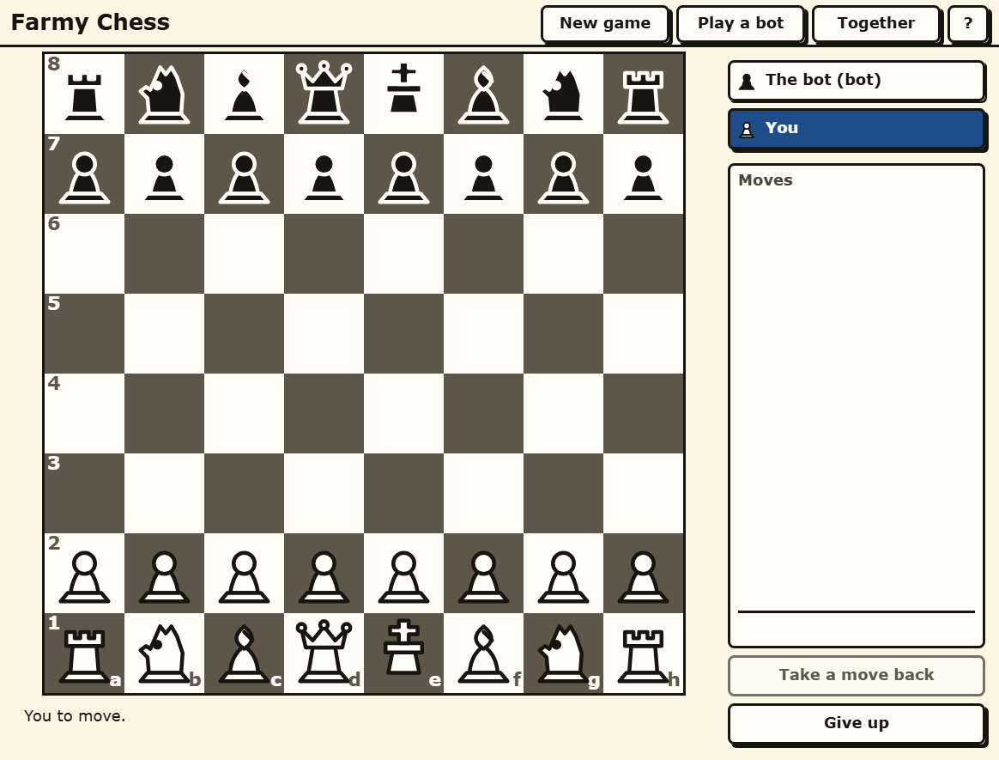

Farmy Chess
Complete chess, in pieces you can read across the room, with no clock anywhere near the board.
Play Farmy Chess in your browser →

Every rule, including the ones that get skipped
A lot of free chess is nearly chess. It moves the pieces correctly and then quietly omits the parts that only come up once a month: en passant, the difference between the two castles, promotion to something other than a queen, and the draws that are not stalemate.
Farmy Chess plays the whole game. Castling on both sides, with the four conditions that forbid it enforced rather than assumed. En passant, on the one move it is legal. Promotion to any piece, so the under-promotion that wins the position is available to you. Check, checkmate and stalemate, and the draws by fifty moves, by threefold repetition and by insufficient material. A move that would leave your own king in check is simply not offered.
There is no clock
Nothing on this board counts down. There is no timer on a move, no timer on the game, and no bar quietly draining somewhere at the edge of the screen while you think. You can stop in the middle of a move, look at something else and come back.
This is the single most-requested thing from people who stopped playing chess online: they did not stop because the games were too hard, they stopped because a clock turns thinking into a penalty.
Built for eyes that are not twenty any more
The pieces are drawn large, and they are shaped so you can tell them apart by outline alone — a knight is a different silhouette from a bishop whether or not you can resolve the detail on either. The board is high contrast. Nothing you need is written in small type, and nothing important is signalled by colour alone.
The same care goes into the rest of the studio's board games, and it is the reason they exist: most browser board games are designed on a large monitor by someone who can see it perfectly.
An opponent that plays at your level
The computer opponent adjusts to you rather than sitting at one fixed strength. A bot that always wins is a demonstration and a bot that always loses is a toy; either way you stop after two games. This one is trying to give you a game.
Or play with somebody
Start a room and you get a link. Send it to whoever you want to play — by message, by email, however you already talk to them — and they open it in their browser. Neither of you signs up, neither of you installs anything, and the two browsers talk to each other directly rather than through a server that keeps your game.
No account, no sign-in, nothing kept
There is no account to make, so there is nothing to verify, nothing to remember and nothing to delete later. The site sets no cookies and keeps anonymous counts only.
The other board games
The same board, the same big pieces and the same absent clock, in Farmy Checkers and Farmy Ludo. If words are more your thing, Farmy Crosswords holds a crossword, a wordle, a spelling bee, connections and strands, and Farmy Scrabble is its own board.